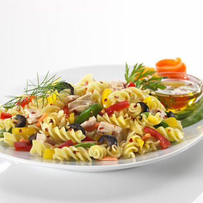

Pasta

Description
Pasta is a staple food in Italian cuisine and has gained popularity worldwide due to its versatility, comforting taste, and wide variety of shapes and flavors. It is made from unleavened dough, typically consisting of durum wheat flour or semolina mixed with water or eggs, although there are variations that use alternative grains or ingredients.
The dough is kneaded until it reaches a smooth and elastic consistency, then rolled out and cut into various shapes. Common pasta shapes include spaghetti (long, thin strands), penne (short tubes with angled ends), fusilli (spiraled corkscrews), and farfalle (butterfly or bowtie shapes), among many others.
Ingredients
- Sauces: Pasta can be served with a wide range of sauces, such as tomato-based marinara or Bolognese sauce, creamy Alfredo or carbonara sauce, pesto sauce made from basil, olive oil, garlic, and pine nuts, or a simple olive oil and garlic sauce.
- Vegetables: Vegetables can be incorporated into pasta dishes to add color, texture, and nutritional value. Popular choices include tomatoes, bell peppers, zucchini, spinach, mushrooms, onions, and broccoli.
- Meats and Seafood: Pasta can be accompanied by various proteins like ground beef, Italian sausage, chicken, shrimp, or smoked salmon. These ingredients can be cooked separately and added to the pasta or cooked together in the sauce.
- Cheese: Grated or shredded cheese is a common addition to pasta dishes. Parmesan, Romano, mozzarella, and ricotta are popular choices that add richness and flavor. Cheeses can be sprinkled on top or melted into the sauce for a creamy texture.
- Herbs and Spices: Herbs and spices such as basil, oregano, parsley, garlic, black pepper, and chili flakes can be used to season the pasta or sauce, adding depth and aroma.
Steps
- Boil water: Fill a large pot with water (generally 4 to 6 quarts per pound of pasta) and place it on the stove over high heat. Add salt to the water (around 1-2 tablespoons per 4 quarts) for seasoning.
- Bring water to a rolling boil: Allow the water to come to a full, rolling boil. This may take a few minutes.
- Add the pasta: Once the water is boiling, carefully add the pasta to the pot. Stir immediately to prevent the pasta from sticking together or to the bottom of the pot.
- Cook the pasta: Follow the cooking time indicated on the pasta package as a general guideline. Stir occasionally during cooking to ensure even cooking and to prevent sticking.
- Test for doneness: As the pasta cooks, periodically remove a small piece and taste it to check for doneness. Pasta should be cooked "al dente," which means it should be firm to the bite but not overly soft or mushy.
- Drain the pasta: Once the pasta reaches the desired texture, turn off the heat and carefully pour the contents of the pot into a colander or strainer to drain the water. Shake the colander gently to remove excess water.
- Optional: Rinse the pasta (depending on the recipe): In some cases, rinsing the pasta with cold water can stop the cooking process and prevent it from becoming too soft. However, for many recipes, such as those with sauces, rinsing is not necessary as it can remove the starches that help sauces cling to the pasta.
- Serve or incorporate into your recipe: Transfer the cooked pasta to a serving dish or incorporate it into your desired recipe, such as tossing it with sauce, adding it to a casserole, or using it as a base for pasta salads.